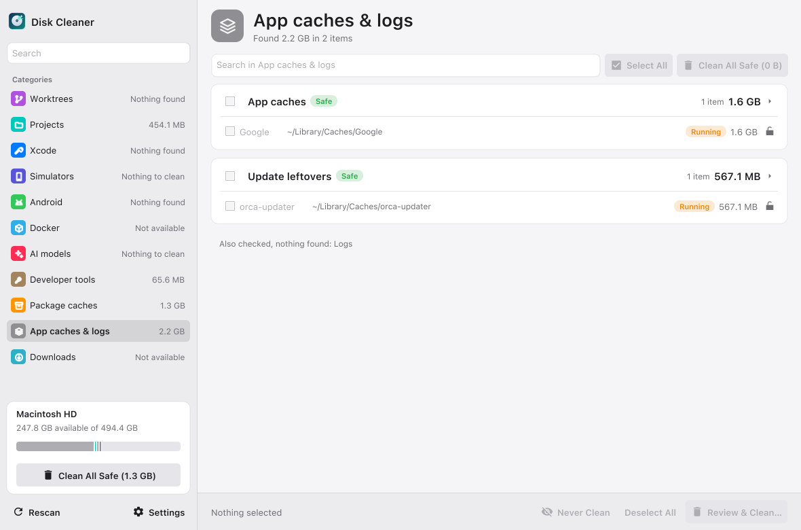
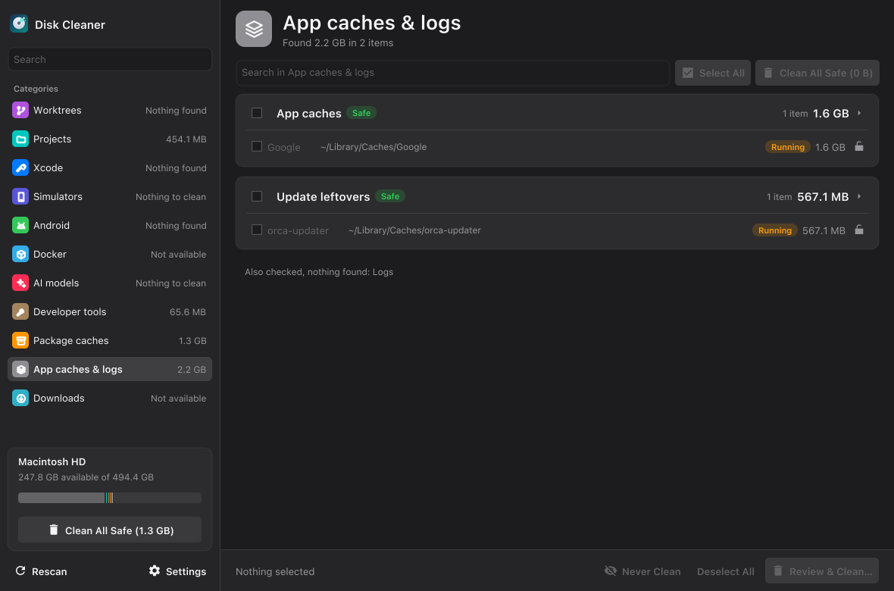

What it finds
-
Build folders in your projects
node_modules,Pods,buildand the like in your git repositories and worktrees, and only what git ignores. Projects with no commits for 30 days are listed apart from active ones. Plus leftover.xcarchive,.ipa,.apk,.aab,.dmgand.appfiles next to the code that git doesn't track. -
Xcode and simulators
Derived Data, archives, device support files, the documentation cache and SwiftUI previews. iOS, watchOS, tvOS and visionOS runtimes, the simulators themselves and their dyld cache.
-
Android
Emulators, system images, NDK versions and SDK sources.
-
Docker
Containers, images, volumes and the build cache.
-
AI models
LM Studio and Ollama models, the Hugging Face cache, and models that apps downloaded on their own.
-
Developer tools
Cursor, VS Code, Claude Code, Codex, JetBrains IDEs, Android Studio, Zed and more: leftovers of apps you've uninstalled, old versions, caches, temp files and downloaded runtimes.
-
Package caches
npm and npx, Yarn, CocoaPods, Gradle, uv, pip, Homebrew, Go, SwiftPM, Electron, Expo, browsers for tests, Python bytecode and a few more.
-
Downloads
Installers, app builds and archives in your Downloads folder. These go to the Trash instead of being deleted, so you can still get them back. A mounted
.dmgcan't be selected. -
App caches and logs
App caches in
~/Library/Caches(Apple's own system caches are left out), leftovers of app updates, and~/Library/Logs.
A section that finds nothing says so, and lists what it checked.
Nothing is deleted blind
-
Let it look
It scans every section when it opens. The sidebar shows how much each one found, and the disk card under it shows how much space is free.
-
Read before you tick
Click a category's header and it tells you three things: what it is, why it's safe to remove, and what happens after cleaning. For Xcode's Derived Data, say: Xcode makes it again on the next build, and that build takes longer than usual.
-
Check the commands, then clean
Tick what you want gone. A review window then shows every command that will run, grouped by section, and nothing is deleted until you press Clean. Afterwards it tells you how much free space you actually got back.


What keeps it safe
-
Safe and Caution
Safe means it comes back by itself and nothing is lost, like Derived Data or the npm cache. Caution means you'd lose something you have to set up again or wait a long time to download, like a simulator or an Android emulator.
-
Running things are locked
A running container, simulator or emulator, the Gradle daemon, a process started from a worktree: the checkbox is disabled and the reason is shown next to it.
-
Clean All Safe
One button cleans everything marked Safe, in the section you're looking at or in all of them at once. Caution items and anything in use are left out. It opens the same review window first.
-
A Never clean list
Click the lock at the end of a row, even on something that's running, or select items and press Never Clean, or add a whole folder in Settings. They stay in the list with a Never clean label, can't be selected, and Clean All Safe skips them. Click the lock again to take one back.
-
Dry run
Turn it on in Settings and the app shows what it would delete, but doesn't touch anything. A good way to try it the first time.
-
Only what you can see
Checkboxes belong to the section on screen. Open another section or start a search and they're cleared, so you never clean something you can't see.
What it never deletes
- Anything running, as above.
- Anything on your Never clean list, or inside a folder on it.
- Simulator entries that share a disk image, the newest runtime of each platform, and simulators whose runtime is missing.
- Anything git tracks in a worktree.
-
Your home folder, the folders right inside it (
~/Projects,~/Libraryand so on) and other apps' data (~/Library/Application Support,Preferences,Keychains,Mail…). The part of the app that does the deleting refuses these itself, even if a section gets it wrong. -
With the administrator password, anything outside
/Library/Developer/CoreSimulator/Caches. Commands that run with administrator rights aren't allowed at all.
What it asks for
On first launch, before the first scan, it explains what it uses and why, with a switch for each. The same switches are in Settings → Permissions:
- Looking in Downloads. macOS asks for access to that folder. Files from Downloads always go to the Trash.
- Project folders in Documents or Desktop, if you keep projects there: macOS protects those folders the same way.
- The administrator password. macOS asks for it each time, and only to remove simulator caches. With the switch off, those items are skipped.
macOS doesn't let an app change its own permissions, so to take one away completely there's an Open System Settings link next to it. There's no account, and the app sends nothing anywhere.
Install
macOS only. Open Terminal and run:
git clone https://github.com/mrWD/disk-cleaner.git
cd disk-cleaner
./scripts/build.sh --install
The script installs whatever the build is missing, builds the app, puts
Disk Cleaner in /Applications and opens it. From then on it's an
ordinary app in Launchpad, Spotlight and the Dock.
Xcode Command Line Tools
Fyne compiles part of itself from C, so the build needs a C compiler.
macOS opens a window: click Install and wait, the script carries on by itself.
Go
Through Homebrew if you have it. Without Homebrew, the official archive from go.dev goes into ~/sdk, no administrator password needed.
Go 1.21 or newer, if you already have it, is kept.
fyne
The tool that packages the build into a .app.
The first build takes a few minutes. To update, run git pull and
./scripts/build.sh --install again: the running copy is closed and
replaced. No git yet? macOS offers to install the Command Line Tools as soon as
you run git clone. Accept, then run the three commands again.
Because the app is signed ad-hoc, macOS may ask for Downloads access again after each rebuild.
Support Disk Cleaner
It's free and has no ads. If it saved you some space, you can put something in the jar.